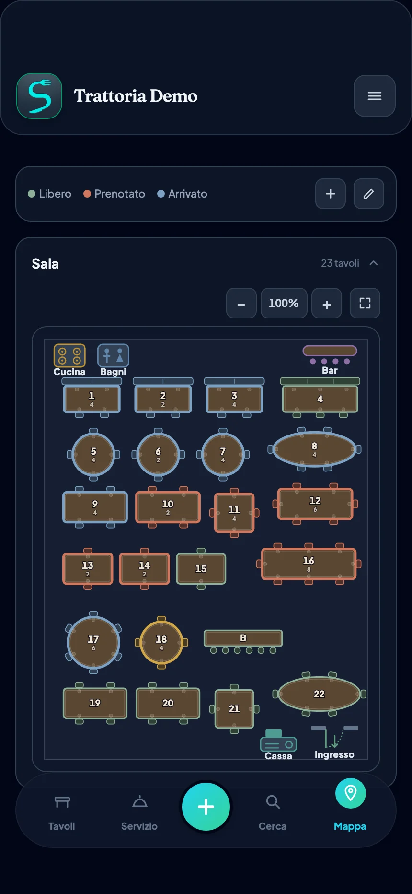
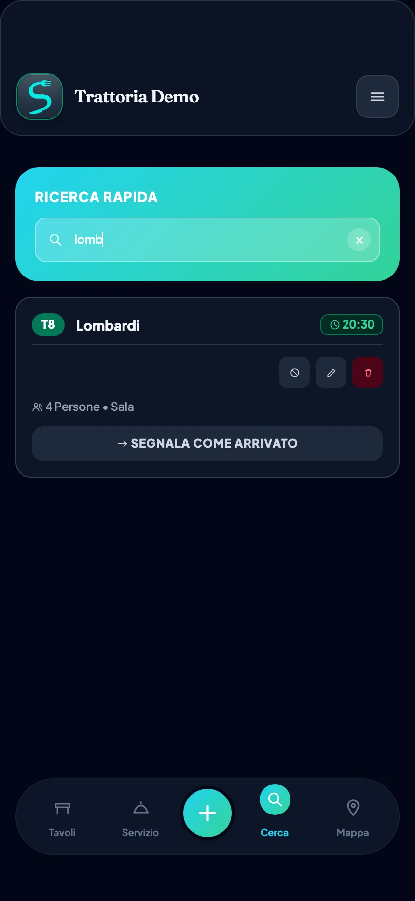
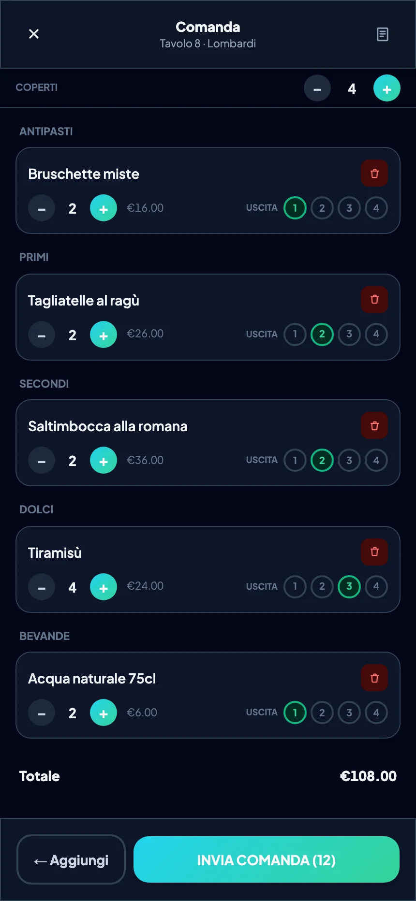
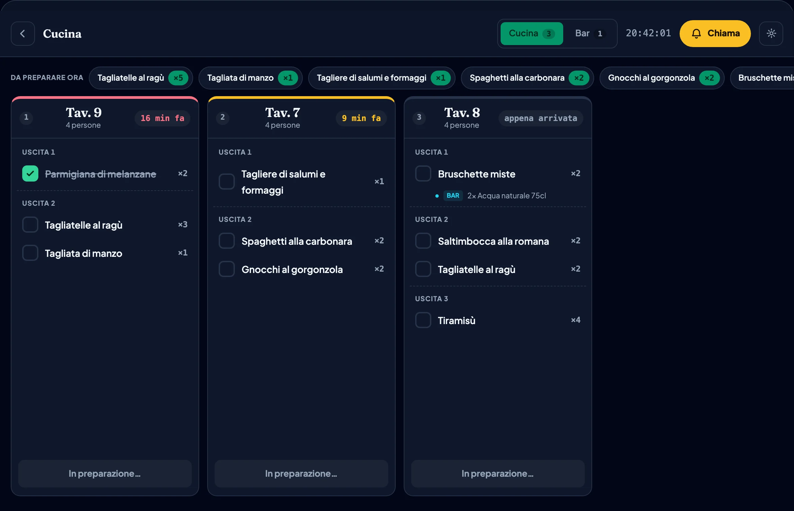
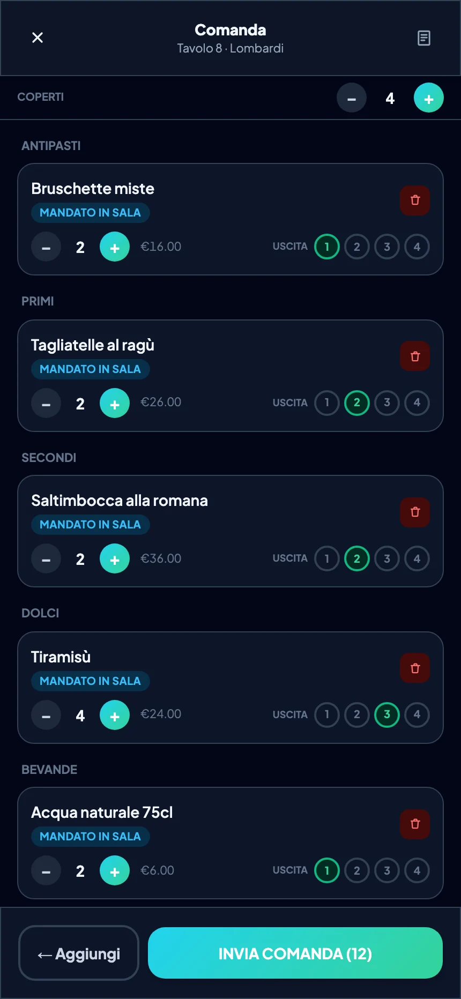
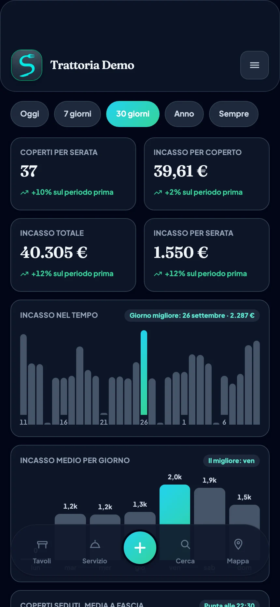
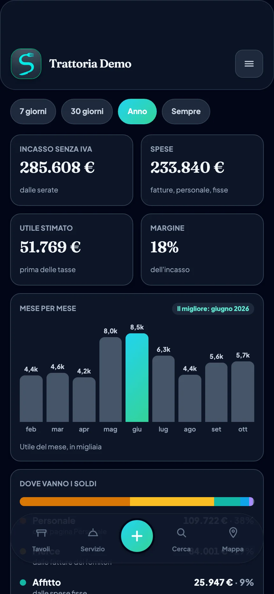

La tua sala, finalmente sotto controllo.
Prenotazioni, comande, turni e conti in un’app sola, sul telefono o sul tablet che hai già.
Senza impegno. In uso ogni sera in un ristorante vero, su iPhone, iPad e dal browser.

Prenotazioni, comande, turni e conti in un’app sola, sul telefono o sul tablet che hai già.
Senza impegno. In uso ogni sera in un ristorante vero, su iPhone, iPad e dal browser.

20:30 → 20:41 Sala
Marco, cameriere
Marco cerca il nome nell’app e tocca «Segnala come arrivato»: il tavolo 8 si accende per tutti, nello stesso istante. Poi li accompagna al tavolo e prende l’ordine dal telefono, uscita per uscita.


20:42 → 20:54 Cucina
Elena, cuoca
Elena la vede sul tablet, divisa per uscita e con le allergie ben visibili. Prepara, spunta i piatti e tocca «Manda in sala»: Marco lo vede subito sul suo telefono, senza urlare da una stanza all’altra.


Fine serata Ufficio
Giulia, titolare
Coperti, incasso, utile stimato, fatture da una foto, turni della settimana. Senza aver scritto niente a mano.
L’utile è una stima di lavoro e la lettura delle fatture può sbagliare: l’ultima parola è tua. Non sostituisce il commercialista.


Veniamo noi di persona, senza impegno, e te lo mostriamo sui tuoi tavoli veri.
Sto preparando il locale…
| Carta o WhatsApp | Gestionale tradizionale | Con SalaFlow | |
|---|---|---|---|
| Aggiornare un tavolo | Leggi il messaggio, scrivi sul quaderno, avvisa lo staff a voce | Apri il gestionale, cerca la prenotazione, aggiorna lo stato | Un tocco sulla piantina, visibile subito a tutti |
| Turni, presenze e ore | Un foglio, i messaggi e le ore contate a mano a fine mese | Spesso un altro programma, a parte | Calendario, presenze e ore nello stesso strumento |
| Fatture e costi | Una cartellina e foto sparse: i conti si fanno a fine mese | Di solito fuori dal gestionale di sala | Foto della fattura, scadenze e un utile stimato sempre a portata |
| Strumenti da tenere aperti | 3 o più, scollegati tra loro | 2 o più: il gestionale, più WhatsApp per il resto | 1 solo |
Confronto basato su come funzionano tipicamente i gestionali da ristorante con modulo prenotazioni/sala, non su un fornitore specifico.
La sala
Prezzo in definizione
La sala e la cucina
Prezzo in definizione
Tutto il Base, più:
Anche i conti dell’attività
Prezzo in definizione
Tutto Comande, più la Gestione:
I prezzi sono ancora in definizione. Prenota una visita e ti diciamo quale pacchetto serve al tuo locale.
Fatta da chi in sala ci ha lavorato davvero.
Nasce da anni passati tra comande, tavoli e quaderni pieni di cancellature. Ogni funzione la testiamo per prima nel nostro locale, a servizio in corso, e la miglioriamo in base a quello che succede davvero una sera piena.
Dove la usi
SalaFlow è il gestionale della sala, fatto da chi in sala ci ha lavorato: piantina dei tavoli in tempo reale, prenotazioni, comande, cassa, turni, checklist e conti. Sostituisce quaderno, WhatsApp e fogli Excel con un unico strumento sincronizzato su tutti i dispositivi dello staff.
Base è la sala: piantina, prenotazioni, richieste online, stato del servizio, profili dello staff e notifiche. Comande aggiunge menù e comande con la vista cucina, cassa e asporto, più turni, presenze e checklist. Completo aggiunge la Gestione: andamento, magazzino, fatture, spese, costo del personale e utile stimato.
Solo chi gestisce: il proprietario e chi ha un accesso «gestione». Lo staff di sala vede la piantina, le prenotazioni, i propri turni e le proprie mansioni, ma non gli importi.
La lettura delle fatture è automatica e può sbagliare: controlli e correggi tu prima di salvare, e finché non confermi non viene salvato niente. L’utile è una stima di lavoro, prima delle tasse: se mancano dei dati l’app te lo dice invece di far sembrare l’utile più alto. Non è un bilancio e non sostituisce il commercialista.
No. Il conto e il riepilogo della serata di SalaFlow sono documenti interni, non fiscali: lo scontrino continui a batterlo sul tuo registratore.
Dipende dal pacchetto, e i prezzi sono ancora in definizione. Prenota una visita senza impegno: ti mostriamo SalaFlow sui tuoi tavoli veri e ti diciamo quale pacchetto serve al tuo locale.
Prenota una visita, senza impegno: veniamo noi di persona a mostrarti SalaFlow al lavoro, sui tuoi tavoli veri.
I tuoi dati restano su infrastruttura Google Cloud e non vengono mai venduti.